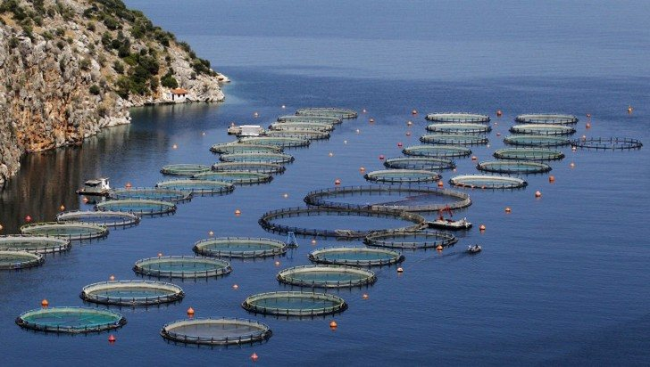

Ozone dissolved to full effect — in 3 seconds, in a working caviar farm.
Carelian Caviar raises sturgeon in Finland. Sturgeon die in bad water — and caviar is a ten-year investment you cannot restart. OxTube was installed to dissolve ozone into the process water, eliminating bacteria and viruses without chemical residues.
Sources: Pylkkänen, IWA Milan 2021 (dissolution times) · SansOx company records. Download the paper
1The starting point
Recirculating aquaculture lives and dies by water hygiene. Chemical disinfection leaves residues; UV misses turbid water. Ozone works — if you can dissolve it fast enough, evenly enough.
2What was installed
OxTube fed with ozone from a generator, installed in the circulation line. The hermetic tube gives ozone molecules a high meeting probability with the water — which is why dissolution completes in seconds, not minutes.
3Measured results
| Measure | Result |
|---|---|
| Time to theoretical max concentration (farm) | 3 s |
| Time to theoretical max concentration (lab) | 1 s |
| Stability of dissolved concentration (lab) | ≥ 4 weeks |
| Bacteria & viruses in treated pools | eliminated |
“There we demonstrated that OxTube could dissolve ozone with exceptional efficiency, eliminating bacteria and viruses in aquaculture pools.”
4What follows from this

Sea-cage aquaculture — the environment where oxygen and hygiene decide the harvest. Image as published on sansox.fi.
The same fast ozone dissolution opened doors in aquaculture in Norway, Chile and Vietnam — and it is the exact mechanism behind the 87–90 % pharmaceutical removal measured in Kuopio. One principle, two industries.
Does your case look like this one?
30 minutes, technical, free. Bring your flow rates and targets.